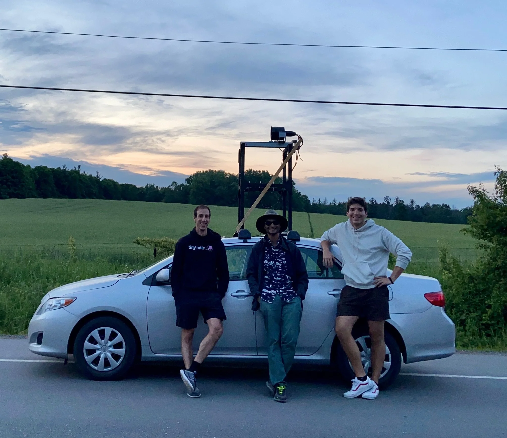
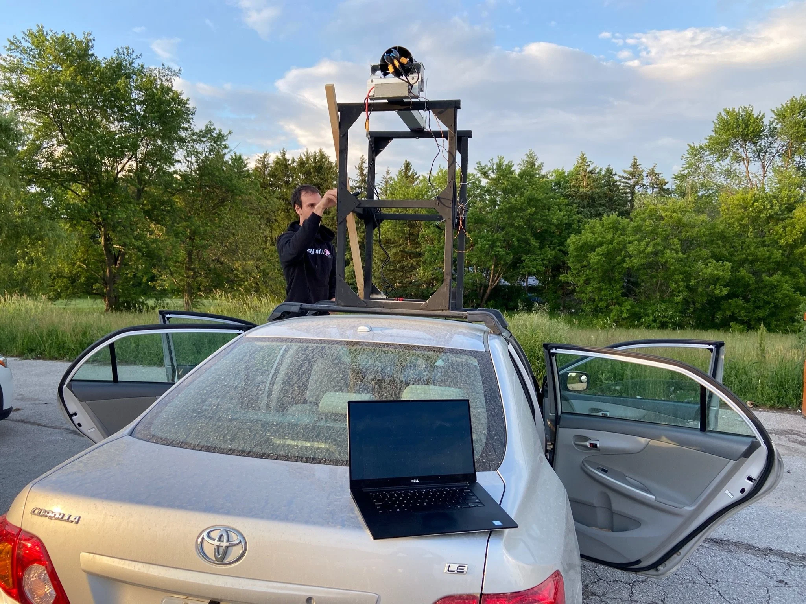

Wingsuit Propulsion 2022
31 content blocks

After spending the last 3 years building small, medium, and large drones, I now found myself in a transition phase plus locked down during the COVID-19 pandemic. I spent a lot more time with friends asking “what if” type of questions. Somewhat on theme, we landed on a random idea: when you go sky diving, what if you could extend the time you are on the sky by generating lift?
If you’ve never been sky diving, here’s roughly how it goes. You get ready on the ground, with all of your equipment and checks (30-60 minutes), you hop on an airplane and ascent to the drop zone (15-20 minutes), you jump out of the airplane in free fall (1 minute), you open your parachute and descent (5 minutes). That is to say, the bulk of the time is spend not falling out of the sky, and you have to go through a lot of prep for that exciting 1 minute. We wanted to extend that time (and when I say we, I mean mostly Ignacio. I personally don’t like heights).
An option for this would be a wingsuit, which turns you into a glider (~2.5 glide ratio). But what if we could do even better than that by strapping some sort of propulsion producing device onto you? Not an entirely novel idea, Peter Salzmann unveiled a similar electric wingsuit device recently, but this is not the sort of stuff you can buy at the store, you need to build your own or wait.
Anyhow, that’s exactly what we set out to build. We had to figure out how to strap some fans and batteries onto a sky diver, in a way that doesn’t get in the way, is light enough, has enough battery to at least add a couple of minutes flight time (else what’s the point), and it’s reasonably safe. Talking about batteries implies an electric solution, to be honest a kerosene jet turbine is also a possible option but the noise and the fuel part made it less appealing to us.
Here’s a video of the recap of this project. Unfortunately (and fortunately) I moved away from Toronto down to San Francisco to participate in the Y Combinator Winter 2023 batch, so I’ll likely won’t see this one through.
So the project started with the idea of extending time spent on the sky when sky diving, and as shown in the video above, ended (at least for me) with the EDF unit strapped on top of a car plus a simulation techniques paper and presentation written by my friend Manit. This is something that we did on the side a couple of weekends through the year and it's not as intensive as some of the other projects on this website, but I think it’s cool regardless (watch the videos above and below and you’ll see what I mean).
I’ll skip the part where we did a bunch of math to check if this even made sense pursuing, all of that did happen and by our calculations this was entirely possible. When going from theory to reality, you quickly realize the limitations of the tools available to build something like this. There simply aren’t that many ways of generating enough thrust through commercially available products. I’ve also mentioned above why we opted out of kerosene jet turbines, and for packaging and safety reasons any open propellers would also be a bad reason, quickly we were left with EDFs (electric ducted fans) as the best option. And within the realm of EDFs available (at least back in 2020), it’s not like there’s a wide selection to pick from in the thrust range that we were shopping for, in fact we ended up going with VasyFan mostly because it was the only option. Also, VasyFan has come up a long way and is super legit now, but back then it was pretty much a dude in Italy posting videos of what appeared to be home-made EDFs on his Instagram account and us on the other side of the world wiring him thousands of dollars to see if he sends us one.
When buying EDFs and propellers in general (and this is also somewhat true for other components in general), the promised performance characteristics often don’t match what you actually encounter in the field (ideal conditions and all). And further, for things like an EDF, a turbine, or propellers, usually all of the thrust figures are static thrust (that is to say, thrust when the fan is fixed and not moving, or the speed of the air intake is 0), but since in our case we’d be falling from the sky, the intake air was coming at somewhat of a high speed and we needed to gather experimental data on how much thrust the EDF would produce at similar speeds.
The other part to de-risk was the battery component. Usually battery cells have suggested limits on how fast you can discharge them, and what the peak continuous current is (if you think of the discharge profile for this system, we’d be running the EDF at maximum throttle for as long as possible, so it’s be steep and continuous) without hurting the batteries.
For measuring static thrust and battery pack performance, we built some static rigs shown above. To measure things like specific thrust, we built a rig and strapped it on top of a car and drove as fast as we could on a straight, as shown below. Steady state 140km/h was about as high as we could go. Each rig involved a bit of effort, you have to setup the right sensors, wiring, and write some software to be able to read the data and store it, but I won’t bore you with the details.

That’s all I have to share for now on this. If this or any of the other projects in this site inspire you in any way, or you are building something similar, hit me up :)